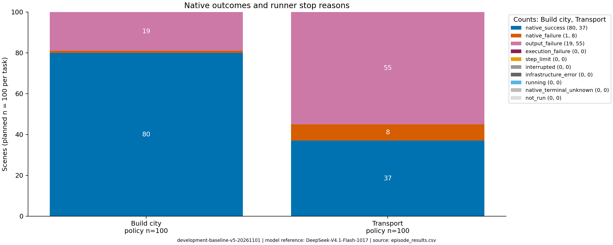

本轮保持 thinking/high + max_tokens=8192。1M上下文容量与单次生成额度是两回事；8K是有效的固定预算实验条件。
完整200局中：74局输出失败，9局原生游戏失败。二者分别解释，不删除输出失败来抬高成功率。
本地完整保存 19 个案例，约 0.95 GB原始数据：9个原生失败（全部）、5个输出失败、5个成功参照。精选子集用于诊断，总体统计仍使用全部200局。
完整中文失败分析 · 全体统计证据 · 本地/服务器路径索引 · 下载核对记录
失败共性分析与成功对照 · 课程报告正文 · 100局跨海共性指标
每个案例页面可直接播放完整玩家可见状态回放，展开每次决策，查看请求、最终输出、动作、单位/城市变化和原生通知。回放由轨迹重建，并非游戏屏幕录制。
| 案例 | 入选角色 | 完整局结局 | 动作 | API调用 | 为什么保留 | 本地证据 |
|---|---|---|---|---|---|---|
| 建城349 | 原生失败 | 原生失败 | 56 | 66 | 唯一建城原生失败：反复探索、误把工程增产当评分提高，最后低于目标建城。 | 回放与时间线 完整视频 · 原始结果 |
| 建城254 | 输出失败 | 输出失败 | 14 | 16 | 探索过程中普通与纠错输出连续为空，原生游戏尚未结束。 | 回放与时间线 完整视频 · 原始结果 |
| 建城666 | 输出失败 | 输出失败 | 0 | 2 | 零环境动作即停止，隔离展示输出问题不能被归因于错误游戏操作。 | 回放与时间线 完整视频 · 原始结果 |
| 建城93 | 成功参照 | 原生成功 | 7 | 7 | 达到目标后因移动力为零合法等待，再就地建城；避免将合理等待误标为拖延。 | 回放与时间线 完整视频 · 原始结果 |
| 建城948 | 成功参照 | 原生成功 | 51 | 58 | 51次动作、58次调用后仍成功，包含截断JSON后的纠错恢复；与349的长轨迹失败对照。 | 回放与时间线 完整视频 · 原始结果 |
| 跨海976 | 输出失败 | 输出失败 | 10 | 15 | 已装载和载运，粮荒损失移民后的恢复阶段又发生连续空输出。 | 回放与时间线 完整视频 · 原始结果 |
| 跨海351 | 原生失败 | 原生失败 | 25 | 34 | 粮荒损失两名移民，购买生产后仍受城市人口前提限制，明确反馈后继续等待至到期。 | 回放与时间线 完整视频 · 原始结果 |
| 跨海386 | 原生失败 | 原生失败 | 18 | 27 | 已登陆的移民在建城前损失，后续重新生产受人口限制，保留全部原生失败之一。 | 回放与时间线 完整视频 · 原始结果 |
| 跨海197 | 原生失败 | 原生失败 | 37 | 59 | 跨海调用最多的失败：37次动作、59次调用，多次登陆仍未建城，展示高开销恢复过程。 | 回放与时间线 完整视频 · 原始结果 |
| 跨海606 | 原生失败 | 原生失败 | 16 | 22 | 曾登陆，但后续关键单位损失并到期；与从未登陆的失败区别阅读。 | 回放与时间线 完整视频 · 原始结果 |
| 跨海650 | 原生失败 | 原生失败 | 26 | 38 | 登陆、粮荒损失、重建与人口条件相互制约，保留全部原生失败之一。 | 回放与时间线 完整视频 · 原始结果 |
| 跨海689 | 原生失败 | 原生失败 | 28 | 37 | 两次登陆和多次粮荒损失后，重建受人口限制而失败，保留完整恢复过程。 | 回放与时间线 完整视频 · 原始结果 |
| 跨海75 | 原生失败 | 原生失败 | 18 | 23 | 两次登陆但都未完成建城，展示登陆不等于任务完成。 | 回放与时间线 完整视频 · 原始结果 |
| 跨海859 | 原生失败 | 原生失败 | 25 | 37 | 没有完成登陆，移民损失后重建受人口限制；本正式版本原生胜负已知。 | 回放与时间线 完整视频 · 原始结果 |
| 跨海631 | 成功参照 | 原生成功 | 8 | 9 | 同船载运两名移民，粮荒后仍有幸存者在登陆地建城；包含完整同一单位证据链。 | 回放与时间线 完整视频 · 原始结果 |
| 跨海424 | 成功参照 | 原生成功 | 6 | 8 | 初始粮食盈余为零、没有粮荒损失的短成功轨迹，且成功纠正一次截断JSON；展示场景条件差异。 | 回放与时间线 完整视频 · 原始结果 |
| 跨海329 | 动作语义/初始条件 | 输出失败 | 10 | 18 | 初始无运输船；前两次把plant误认为建城，随后移民损失，最后输出失败。 | 回放与时间线 完整视频 · 原始结果 |
| 跨海665 | 协议异常后成功 | 原生成功 | 10 | 11 | 一次finish_reason=stop的最终输出包含多段JSON及额外文本，严格解析失败，纠错后继续并原生成功。 | 回放与时间线 完整视频 · 原始结果 |
| 跨海999 | 未触顶空响应 | 输出失败 | 5 | 9 | 一次finish_reason=stop、5533个思考tokens即返回空内容，纠错后继续，后来才因连续触顶空输出停止；区别两种空响应。 | 回放与时间线 完整视频 · 原始结果 |
